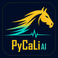

PyCaLiAI v6 marks機械学習 × JRA中央競馬 — 毎週無料公開
13年分・約62万走のレースデータで学習したAIの予想を、毎週無料で公開しています。成績は的中も外れも、そのまま集計して載せています。
01 — HONEST RECORD
全レース・全買い目を記録し、回収率を信頼区間つきで公開しています。当たった予想だけを選んで載せることはせず、外れた分も含めて集計しています。競馬には約20〜25%の控除率があり、「必ず儲かる」予想は存在しません。その前提のうえで、AIがどこまでやれるかを検証しているサイトです。
集計は毎開催後に自動更新。数値はモデル運用実績に基づく実測値で、投資助言ではありません。馬券の購入は自己責任でお願いします。
02 — HOW TO READ
※3着内率は長期検証(2024–25年テスト期間)の値。直近のライブ実測は上の HONEST RECORD を参照。
03 — TODAY'S FOCUS
勝率PはAIモデルの推定値（Plackett–Luce）。「under」は市場人気よりAI評価が高い＝妙味候補。